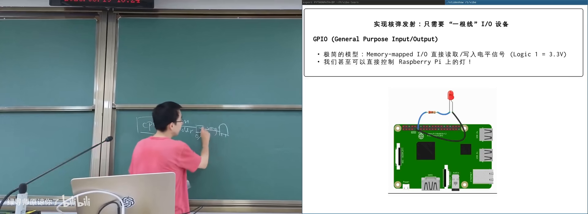
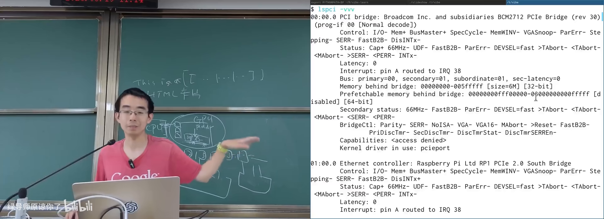
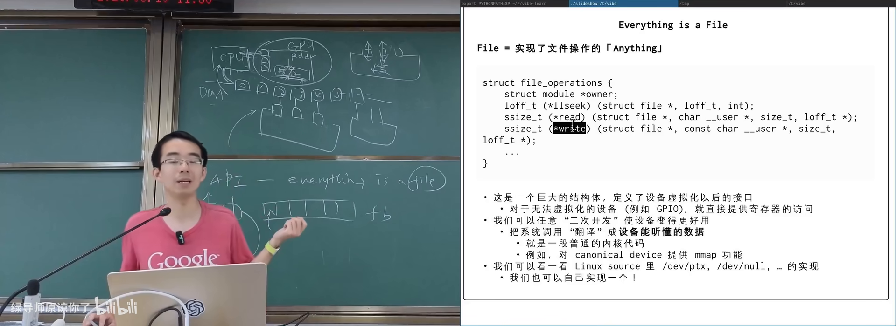

原视频：Bilibili · BV1dYLq6gE8W（时长约 87 分钟） 课程：南京大学《操作系统原理》（2026）第 22 讲 整理说明：本书由视频字幕经 AI 重构而成；口语已转为书面语；关键时间点标注 (参考时间)，截图卡片可跳转视频对应位置。
1. I/O 设备原理：CPU 眼中的世界接口
(参考时间: 00:00)
虚拟化与并发部分结束后，本讲打开操作系统对象里的“黑盒子”：I/O 设备，并进入持久化（persistence）主题的前奏。
1.1 你看见的电脑其实是外设
日常接触的是键盘、屏幕、鼠标、打印机——输入输出设备（I/O device，CPU/内存与物理世界之间的桥梁）。CS 课学的是底下看不见的 CPU/内存；IO 是计算机的“手和眼”。
规范设备模型（canonical device model）：任何能与 CPU 交换数据的接口/控制器都可以是 IO 设备。对 CPU 而言，设备通常简化为若干寄存器：
| 寄存器 | 作用 |
|---|---|
| status | 设备是否 ready / 状态 |
| command | 启动、配置等命令 |
| data | 读写的数据 |
访问方式：
- x86 port I/O：独立 IO 地址空间，
in/out指令（如 COM1 基址0x3F8）； - 内存映射 IO（MMIO）：设备寄存器映射到物理地址，直接 load/store（树莓派等 ARM/RISC-V 常见）。
1.2 中断与设备线程的想象
设备可通过中断线通知 CPU。用户态心智模型：
线程 t_device:
P(信号量) // 等待中断
中断处理程序:
V(信号量) // 数据到来等事件
唤醒 t_device
时钟中断保证 OS 对 CPU 的霸权地位；IO 中断则由内核处理后唤醒等待者。
1.3 从 LED 灯到“任何东西”
最简设备：一个可写寄存器连 LED。树莓派上可用 sysfs 路径（如 /sys/class/leds/.../brightness）write 闪烁。
能控制 GPIO 电平 → 继电器/电机/门禁在工程上同构——演示里戏称“核弹发射器”，强调同一抽象覆盖所有设备。
其他经典设备：
- 串口 / UART / TTY：配置寄存器后读写 data，即可实现终端；
- PS/2 键盘鼠标：数据/时钟/VCC/GND 等引脚，端口
0x60/0x64；早期重复按键由键盘控制器完成，今多由软件处理； - ATA/IDE 磁盘：等待 ready → 写扇区号与数量 → 命令寄存器 → 从数据口读。

LED：最简 IO 设备即一个寄存器在 B 站打开 (00:10:00)
2. 打印机、摄像头、协处理器与总线
(参考时间: 00:20:25)
2.1 打印机：设备是程序的解释器
早期打印机/绘图仪：卷纸（Y）+ 机械臂（X）+ 提笔/放笔 → 可画任意图形。CPU 侧只需发送“提/放/移”的指令序列。
设备变强后，描述语言升级：
- PCL：
ESC+ 命令 + 图像数据； - PostScript：图灵完备的栈式语言，用路径/曲线/填充/字体描述矢量图形，长期是打印事实标准；
- PDF：更安全的容器格式（去掉通用计算），保留矢量描述；LaTeX/markdown 编译到 PDF 再
lp/lpr打印。
打印机 = 解释专用语言的小计算机。
2.2 USB 摄像头与 UVC
现代 USB 摄像头多免驱：UVC（USB Video Class，USB 摄像头标准协议）规定枚举方式、格式/分辨率/帧率协商、逐帧字节流。Linux 上常见 /dev/video0。行车记录仪、显微镜、内窥镜等本质都是 UVC 设备。
2.3 协处理器与 DMA
设备能否与 CPU 共享内存？可以——协处理器思路。
- 早期：80386 无浮点，配 80387；
- 现代：DMA（Direct Memory Access，专用引擎在内存与设备间搬运数据）：CPU 配置源/目的/长度后释放算力；
- Intel 8237 等多通道 DMA 历史实现；
- ATA 大数据量不再占用 CPU 循环端口读。
GPU/NPU：
- CPU 经寄存器配置 GPU，经 DMA 把 kernel 与数据送入显存，再“启动”kernel；
- GPU 常有独立显存（认为比系统内存更“贵”更快）；NPU 多共享系统内存。
2.4 总线：设备的“地址空间”
IBM PC 时代端口写死；设备种类爆炸后需要动态发现——总线（连接 CPU 与多类设备、负责枚举与数据通路的互连系统）也是特殊 IO 设备。
- CPU 轮询/中断感知设备变化；
- 总线可自带 DMA；
- PCIe：显卡/网卡/NVMe 等高速设备；CPU 手册标明 PCIe lanes 分配；
- USB：插上后枚举设备（
lsusb -t），加载 UVC 等驱动； - CXL（Computer Express Link）：在 PCIe 物理层上的新协议，含 IO/cache/memory 语义，目标是更远端的内存共享（disaggregated memory）。
插拔设备 → 中断 → 轮询总线 → 加载驱动：Windows 历史上的蓝屏名场面多与驱动/时序 bug 有关，Win7 后重构了驱动子系统。

PCIe/USB：总线发现并连接设备在 B 站打开 (00:45:00)
3. 设备驱动程序：从寄存器到文件
(参考时间: 00:52:58)
3.1 为何不能让应用直接摸寄存器
- 多进程都要用 GPU/终端/打印机，必须同步；
- 底层接口过 raw，同步交给应用必然出并发 bug；
- 需要 OS 虚拟化：把设备变成进程可见的对象。
UNIX 抽象：everything is a file——/dev 下设备节点，用 open/read/write（及 flock 等）访问。
显卡无驱动时的兼容模式：伪装成标准 framebuffer（帧缓冲：可当大数组写颜色），保证基本显示；加载驱动后才具备 DMA、3D、CUDA 等能力。
3.2 驱动 = 系统调用到设备语言的翻译
设备驱动是内核模块：把对设备文件的 read/write 等翻成寄存器操作（轮询 status、收发 data、等中断）。
示例：/dev/null
- read 返回 0；
- write 接受任意长度并丢弃（数据黑洞）。
课堂驱动示例「launcher」：
struct file_operations 中注册:
launcher_read → 拷贝 "this is dangerous" 到用户态
launcher_write → 校验密码，成功则在内核日志“发射”
初始化/退出 → 注册/注销 /dev 节点
用 insmod 加载后，cat /dev/launcher 走 open+read；写入正确密码才触发副作用。旧驱动源码可让 AI 帮你适配新内核。
3.3 ioctl：UNIX 脏但必要的一面
文件抽象默认设备是字节流/字节序列；但设备还有 status/command 类控制功能（停止打印、改 TTY 模式、磁盘健康、键盘灯、GPU 功能开关……）。
UNIX 的答案是系统调用 ioctl（对设备文件发送与设备相关的控制请求）：参数以不加解释的方式交给驱动——所有非数据类复杂性几乎都堆在这里。
- 打印机卡纸处理、清洁、装订；
- 终端窗口大小与模式；
- 网卡、GPU 的大量功能经 ioctl 配置；
- CUDA 的 memory copy 等也通过 ioctl 类路径通知驱动启动 DMA。
复杂度体现：微软曾尝试 WSL1 用系统调用拦截模拟 Linux，因 /proc、ioctl 等隐藏细节无法 100% 兼容，最终改用运行真实 Linux 内核的虚拟机方案。
3.4 KVM：一个 ioctl 承载整台虚拟机
Linux 上的 /dev/kvm 演示了 ioctl 的力量：
open("/dev/kvm")；- ioctl 创建 VM、分配用户内存 region、创建 vCPU；
- 把 guest 代码写入内存，设置初始寄存器；
- ioctl
KVM_RUN——进程逻辑上变成虚拟机，连续执行 guest 指令； - 触发 MMIO/IO/超调用等时 VM exit 回到用户态，可模拟设备后再进入。
课程早期的 CrazyOS（软件模拟 RV32 步进）与 KVM 对比，可见“专用硬件 + ioctl 抽象”的效率与复杂度。

设备驱动与 ioctl：用户 API 到寄存器在 B 站打开 (01:00:00)
4. 小结
| 层次 | 内容 |
|---|---|
| 物理 | 灯、笔、镜头、磁头、GPU 芯片 |
| 规范模型 | status / command / data 寄存器 + 中断 |
| 互连 | port I/O、MMIO、PCIe/USB/CXL 总线 |
| OS 抽象 | /dev 文件、驱动、DMA、ioctl |
| 应用 | open/read/write + 少量设备相关控制 |
下节课起更深入 存储设备 与文件系统：磁盘如何变成字节序列，再变成你每天用的文件树。
附录：概念补给
canonical device model
- 是什么：把设备看作可访问的寄存器组（状态/命令/数据）。
- 课上为何出现：从 LED 到 GPU 的统一心智模型。
- 和什么像：所有电器都有开关、指示灯和功能键。
MMIO / port I/O
- 是什么：用内存地址或专用 IO 端口访问设备寄存器的两种方式。
- 课上为何出现：x86 与 ARM/RISC-V 访问设备的差异。
- 和什么像：按货架编号取件 vs 走专门的取件窗口。
UART / TTY
- 是什么：串行通信接口 / 终端设备抽象。
- 课上为何出现：有了串口，早期计算机才“能用”。
- 和什么像：一根电话线两端的电传打字机。
framebuffer
- 是什么：显存中与屏幕像素对应的数组。
- 课上为何出现：显卡无驱动时的兼容显示模式。
- 和什么像：填色本——按格子涂，屏幕就显示颜色。
DMA
- 是什么：不占用 CPU 循环、在内存与设备间搬数据的引擎。
- 课上为何出现：把 CPU 从大批量 IO 中解放出来。
- 和什么像：物流车自己送货，老板不用亲自扛箱子。
总线（PCIe / USB / CXL）
- 是什么：连接 CPU 与设备的互连，负责枚举、数据传输与供电等。
- 课上为何出现：设备不能再写死端口，需要动态发现。
- 和什么像：园区路网 + 门牌系统，新商户入驻即可被找到。
设备驱动
- 是什么：内核中把文件 API 翻译成设备寄存器操作的模块。
- 课上为何出现：应用不应直接竞争底层接口。
- 和什么像：前台翻译——你说“打印”，她操作那台机器。
struct file_operations
- 是什么：文件对象上的操作函数表（read/write/mmap 等）。
- 课上为何出现：驱动向 OS 注册“这个设备文件怎么读写”。
- 和什么像：电器说明书附的按键功能表。
ioctl
- 是什么：对设备文件发送控制类请求的系统调用。
- 课上为何出现：承载打印配置、TTY、GPU、KVM 等几乎所有非读写控制。
- 常见误解：everything is a file 很干净；控制面复杂性其实堆在 ioctl。
- 和什么像：遥控器上一堆厂商自定义按钮。
UVC
- 是什么：USB 摄像头设备类标准。
- 课上为何出现：解释为何 USB 摄像头大多免驱。
- 和什么像：充电口统一后，数据线大多即插即用。
PostScript / PDF
- 是什么：描述矢量打印内容的语言 / 更安全的文档容器格式。
- 课上为何出现：打印机从“画线指令”进化到可编程描述语言。
- 和什么像：从铅字排版到可无限放大的矢量设计稿。
协处理器
- 是什么：协助 CPU 完成特定计算或搬运的附加处理器。
- 课上为何出现：浮点单元、DMA、GPU/NPU 的共同位置。
- 和什么像：厨房里的洗碗机——不替代厨师，但卸下重活。
KVM（本讲语境）
- 是什么：Linux 内核虚拟机设备，用户态经 ioctl 创建并运行 guest。
- 课上为何出现：展示 ioctl 能承载多么重的子系统。
- 和什么像：用一套物业接口就能申请一间“楼中实验室”。
书架 Shelf 流水线生成 · 内容衍生自 B 站公开课程视频 BV1dYLq6gE8W